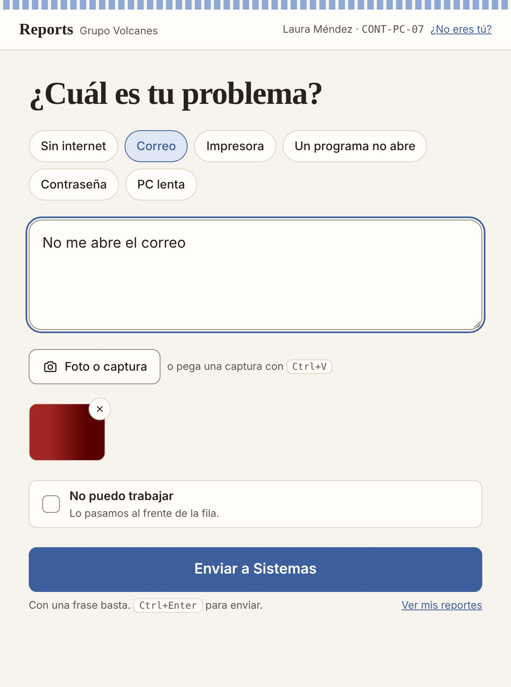
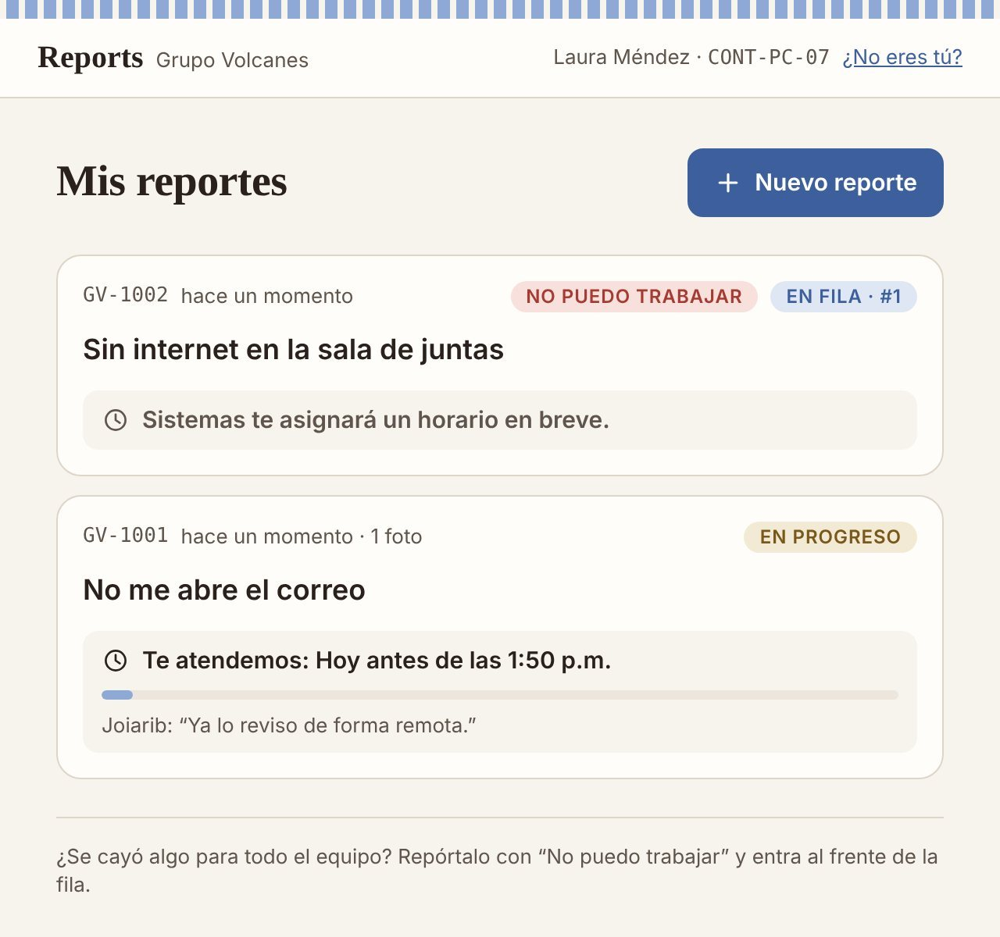
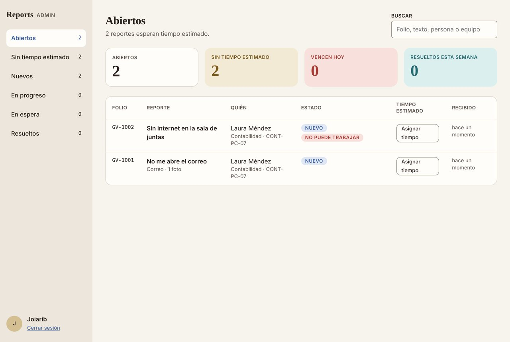
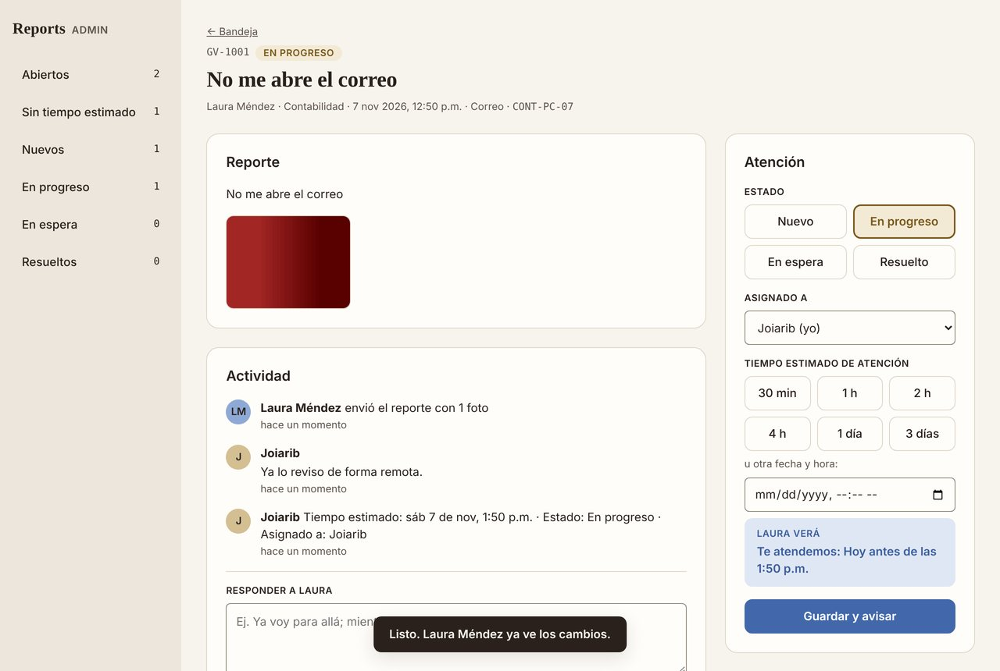

¿Algo no funciona? Repórtalo en segundos.
Reports es la mesa de ayuda de Sistemas de Grupo Volcanes. Ya no hace falta llamar a la extensión, al celular ni mandar WhatsApp: escribes una frase o tomas una foto, y tu reporte queda en la fila con folio, prioridad y tiempo estimado.

Un solo lugar para todo lo que llega a Sistemas
El ritmo de trabajo es rápido y nadie tiene tiempo de llenar formularios. Reports respeta eso: reportar toma lo mismo que mandar un mensaje, pero nada se pierde entre llamadas y chats.
- Llamadas a la extensión, al celular y mensajes de WhatsApp al mismo tiempo.
- Pendientes que se olvidan o se atienden en desorden.
- La persona no sabe cuándo la van a atender.
- Todo entra a una sola bandeja, con folio y el equipo de quien reporta.
- Lo urgente (“No puedo trabajar”) pasa al frente de la fila.
- Cada persona ve su tiempo estimado y los avances desde su escritorio.
Reportar y seguir. Nada más.
-
Abre el acceso directo
“Reportar a Sistemas” está en el escritorio de cada computadora. Se abre en su propia ventana, sin usuario ni contraseña.
-
Cuéntalo en una frase o una foto
Toca un problema común, escribe como en WhatsApp o pega una captura con Ctrl+V. Envía y listo: recibes tu folio.
-
Sistemas te da un horario
El administrador asigna el tiempo estimado en un clic. Tú lo ves en “Mis reportes” junto con sus mensajes, hasta que quede resuelto.
Saber en qué va tu reporte, sin llamar
- Lugar en la fila y tiempo estimado: “Te atendemos hoy antes de la 1:30 p.m.”.
- Mensajes de Sistemas en el mismo reporte.
- Si algo vuelve a fallar, se reabre el reporte con un clic.
- La computadora recuerda quién eres; solo das tu nombre la primera vez.

Una bandeja ordenada por lo que más urge
- Contadores de abiertos, sin tiempo estimado, que vencen hoy y resueltos de la semana.
- Tiempo estimado en un clic (30 min a 3 días) y vista previa de lo que verá el empleado.
- Fotos, historial, respuestas y notas internas en cada reporte.
- Aviso con sonido y notificación de escritorio cuando llega algo nuevo.


Ligero y hecho para la red interna
Corre en cualquier PC o servidor de la oficina. No depende de servicios en la nube ni de licencias.
En marcha en 10 minutos
1. En el servidor
git clone https://github.com/YoyasDG/GV-Reports.git
cd GV-Reports
copy .env.example .env # usuario y contraseña de admin
npm startEmpleados: http://servidor:3000/ · Administrador: http://servidor:3000/admin
2. En cada computadora
powershell -ExecutionPolicy Bypass ^
-File scripts\crear-acceso-directo.ps1 ^
-Servidor "http://192.168.1.10:3000"Crea “Reportar a Sistemas” en el escritorio. Con -TodosLosUsuarios queda para todos los usuarios de esa PC. Los detalles están en el README.